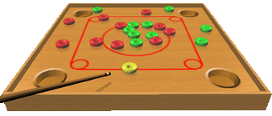

DGM Couronne is a brazilian software, freeware, developed by David Maziero (DGM Soft).
The game consists in twenty discs, 10 of green and 10 of red
on a table.
At the start of the game, each player receive a colour; the player's objective is to clear the
table of his respective colour, by using a yellow cue disc that must
be placed at the red line.
The first shoot is always of the green player.
Player will continue to play until:
- his shoot does not put any disc of his colour in a hole;
- his shoot did put an opponent's disc in a hole;
If the yellow disc be put in the hole, and there are less than 10 discs
of player's colour on the table, 1 disc of this colour will be put back on the table.
The game will end when one player clear all of his discs from the table.
However, the game can result in a draw, in case of a player put, in the last shoot,
the last two discs of different colours in the hole. In that case, the players will play again.